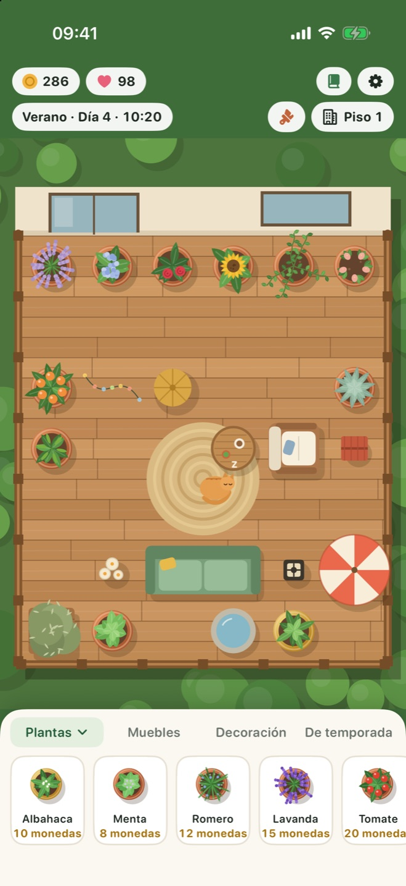
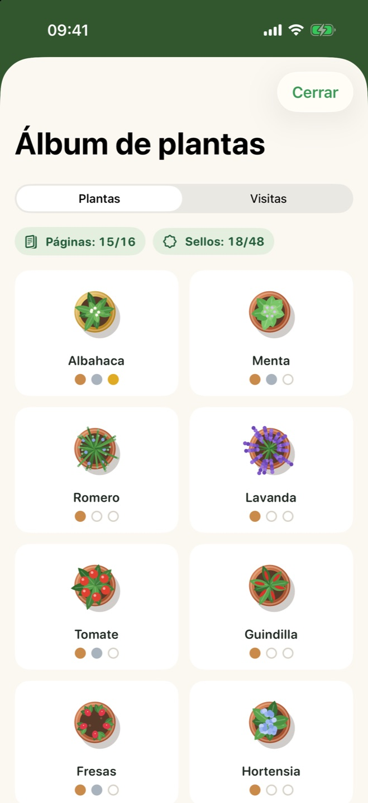
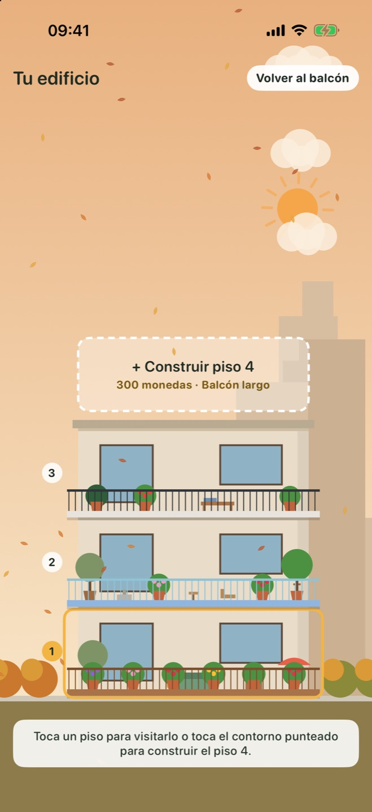

Crece en tiempo real
Un día de juego dura una hora real. Visitas cortas y tranquilas que encajan en tu día, y siempre hay algo listo al volver.
Para iPhone y iPad
Planta hierbas, flores y frutas, decora tu balcón, sigue las estaciones y recibe visitas con plumas y con pelo. Un poco de calma para cada día.
Arrastra una planta a tu balcón, riégala cuando tenga sed y cosecha cuando esté lista.
Añade sofás, faroles, fuentes y suelos nuevos. Un balcón acogedor gana más y atrae más visitas.
Tu jardín sigue creciendo con la app cerrada. Una planta olvidada nunca muere; solo espera un poco de agua.
Todo lo necesario para un ritual diario tranquilo, y nada que te apure.
Un día de juego dura una hora real. Visitas cortas y tranquilas que encajan en tu día, y siempre hay algo listo al volver.
La lluvia de primavera riega tus plantas, el sol de verano madura los tomates, en otoño vuelan las hojas y en invierno la nieve cubre la barandilla.
Coloca muebles y decoración en una cuadrícula y cambia a tarima de madera, mármol o mosaico y una barandilla nueva.
Mariposas, abejas, un búho, una ardilla y los gatos del vecino pasan a verte. Descubre qué le gusta a cada uno; quizá un gato se mude contigo.
Completa tu álbum de plantas con etapas de crecimiento y sellos de cosecha, y desbloquea un limonero especial.
Ahorra monedas para añadir pisos, cada uno con su propia forma de balcón, y mira cómo tu edificio cambia con las estaciones.



Una sola descarga gratuita para ambos. En iPad el balcón tiene más espacio y muestra más del vecindario.
El balcón queda centrado en cualquier pantalla y el jardín llega hasta el borde, alrededor de la barra de estado.
| iPhone | iOS 17 o posterior |
|---|---|
| iPad | iPadOS 17 o posterior |
| iPhone Duo | Compatible |
| Precio | Gratis. Sin anuncios ni compras dentro de la app. |
|---|---|
| Cuenta | No hace falta. Funciona sin conexión. |
| Progreso | Se guarda en tu dispositivo. |
Balcony Bloom no tiene servidores, ni analíticas, ni anuncios. Nada de lo que haces en el juego llega al desarrollador. Leer la política de privacidad
Lee las preguntas frecuentes o abre una incidencia para informar de un error o proponer una idea.